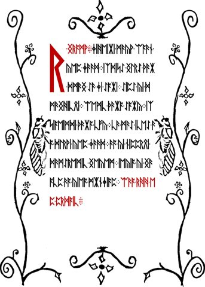
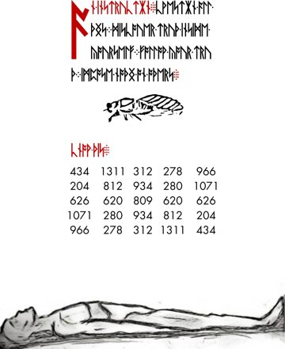
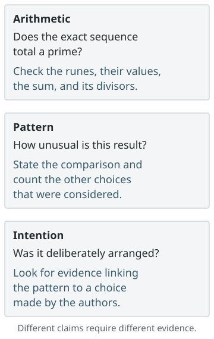
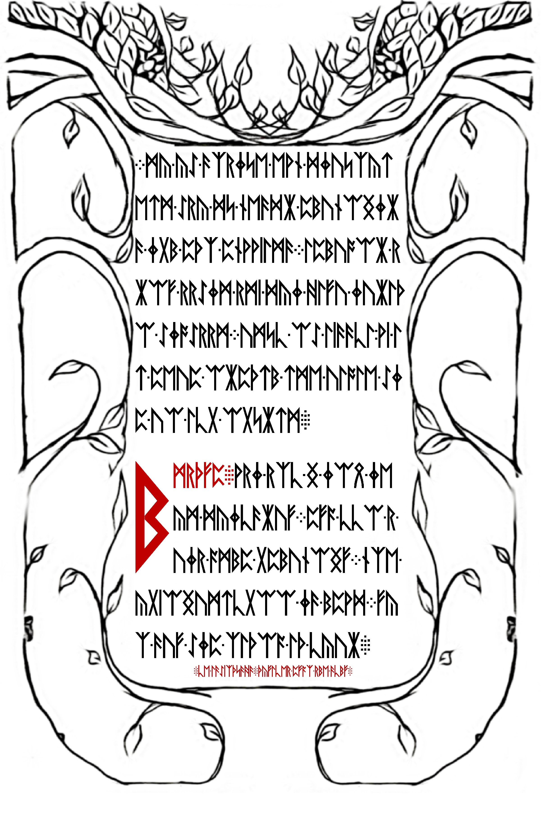

Testing knowledge, certainty, and authority
Read the warning alongside inward discovery, adherence, and the instruction to impose nothing on others.
On this page
The warning asks readers to test what the book says. Later passages direct them inward, criticize adherence, and tell them to impose nothing on others. These are related instructions, but they do not all answer the same question: how to check a claim, how to understand oneself, and how to treat another person are different problems.
Read the instructions together


| Passage | Instruction or claim | Question it raises |
|---|---|---|
| Warning · LP1-01 | Do not accept the book without testing knowledge and finding truth. | What would justify accepting a claim? |
| Welcome · LP1-03–04 | The journey promises an end to certainty; the reader is told to command their own self. | Can self-direction coexist with uncertainty? |
| Loss of Divinity · LP1-10–13 | Adherence can attach to dogma or reason when motivated by belonging and being right. | Why is a person accepting or defending an idea? |
| Instruction · LP1-16 | Question, discover truth within, follow it, and impose nothing on others. | Where does directing oneself end and directing others begin? |
The table paraphrases whole sections. It does not assign every phrase to every page in a range. Follow the complete readings for literal text, contextual English, and decoding instructions.
Belief, truth, justification, and knowledge
Epistemology studies questions about knowledge and justified belief. These distinctions help unpack the warning’s demand to test, without assuming that the manuscript endorses a particular philosophical theory.
| Term | Question to ask | Research example |
|---|---|---|
| Belief | What claim does the person accept? | “I think this mark is a separator.” That identifies a position, not its evidence. |
| Truth | Is the claim actually the case? | For an integer sum greater than 1, being prime or composite does not depend on how strongly someone favors either answer. |
| Justification | What grounds support accepting the claim? | A declared counting rule, preserved input and independently checked calculation support a numerical claim. |
| Knowledge | What makes the acceptance more than a lucky or unsupported correct answer? | Guessing a prime sum correctly and demonstrating the calculation are different achievements. |
The Stanford Encyclopedia of Philosophy’s analysis of knowledge explains the familiar “justified true belief” account and objections to its sufficiency. It should not be presented as a settled definition. For the broader field, see its epistemology overview. These references explain vocabulary; they do not establish a source for Liber Primus.
The distinction becomes especially useful when a calculation is correct but its interpretation is uncertain. Verifying that a selected string has a prime sum supports that arithmetic result. It does not by itself establish why those boundaries were chosen, whether a spelling was selected after inspection, or whether the authors intended the sum. Those are additional claims requiring additional evidence. See prime-sum reproduction and selection and chance comparisons.
A worked example: what does a prime sum establish?
Consider CWESTIAN in the final LP1 instruction. Under the recorded Gematria Primus values, its seven runes give 13 + 19 + 67 + 53 + 59 + 107 + 29 = 347. The spelling and its arithmetic are documented in the word-sum comparison. What can we conclude from that result?

The arithmetic claim is directly checkable. Add the seven values and test the resulting integer. Since the square root of 347 is less than 19, it is enough to check the prime divisors 2, 3, 5, 7, 11, 13, and 17. None divides it, so 347 is prime. That conclusion concerns this exact sequence and counting rule.
The pattern claim needs a comparison. “This sum is prime” and “this is surprisingly rare” are different statements. A comparison might examine other words with a specified length and encoding, or a declared set of alternative spellings. Those choices produce different questions. If many words, boundaries, reversals, or spellings were inspected before choosing this example, the comparison must account for that search. See null models and selection effects; this example does not supply a probability estimate.
The intention claim needs evidence about a deliberate choice. The book’s attention to primes makes the question reasonable, but a prime total alone does not show that this spelling was chosen to produce it. An explicit instruction or a consistent rule that successfully predicts additional cases would provide further evidence to evaluate. A small chance estimate would still not, by itself, identify an author’s purpose.
A useful research note therefore preserves the verified total while leaving the stronger questions open. It states which claim has been checked, which comparison has been performed, and which interpretation is being proposed. This follows the warning’s invitation to examine claims without turning that invitation into a ready-made statistical method.
Questioning a book while preserving it
The warning both invites scrutiny and forbids changing the book’s words or numbers. Those demands need not be contradictory. A reader can reject an interpretation while keeping the source intact. In research, the practical counterpart is to preserve the original image and transcription, then record corrections and proposed transformations separately.
This is an application of the passage, not proof of its intended meaning. It also explains why “the book tells us to do this” is not sufficient evidence for a solution: the warning itself withholds unconditional authority from the book. A proposed decoding still needs a defined input, a repeatable operation, and a way to distinguish its output from an attractive coincidence. See documenting a reproducible attempt.
Certainty is not the same as correctness
The Welcome includes certainty among the things the journey brings to an end. Read with the warning, this makes confidence an unreliable substitute for checking. That does not mean the text proves that knowledge is impossible. It can instead be read as challenging the reader’s attachment to already having the answer.
The first koan gives this tension a narrative form: the student offers increasingly abstract descriptions of himself, but admission follows his inability to finish an answer. The story supplies no final definition for a solver to insert. Its unresolved ending is part of the passage, not a blank that the wiki should silently fill.
Why “dogma or reason” matters
The Loss of Divinity criticizes following either dogma or reason for the sake of belonging and being right. Omitting “reason” would turn this into a simpler criticism of religious authority than the recorded text supports. The stated problem concerns the motive for adherence, not only the kind of argument followed.
In a research setting, agreement with a respected solver and a compelling calculation can both deserve examination. The calculation should remain independently checkable. Conversely, disagreeing with a group is not evidence that an alternative is correct. The manuscript’s language can motivate scrutiny without serving as a verdict on any particular hypothesis. For the surrounding account of dependence and identity, see circumference.
Inward truth and other people
LP1-16 places inward discovery and following one’s truth beside the instruction to impose nothing on others. One interpretation is that personal conviction does not automatically authorize control of another person. The Welcome’s instruction to command one’s own self supports that comparison.
“Truth inside yourself” does not settle how two incompatible factual claims should be evaluated. The passage offers no formal theory of truth. It would be too strong to label it a proof of relativism, or to conclude that a preferred cipher result needs no external check. Personal interpretation and a public claim about what a sequence decodes to have different evidential requirements.
Three instructions about directing oneself
The comparison becomes clearer when each instruction stays attached to its page. The excerpts below join words split by manuscript line breaks but retain the literal reading’s spelling. They are not substituted English spellings for prime-sum calculations.
LP1-04:
COMMAND-YOUR-OWN-SELF. This short red line follows the passage about being a law unto oneself and the holiness of each intelligence. Its object is the reader’s own self. The text does not provide a practical program of habits or exercises here.LP1-13:
PROGRAM-YOUR-MIND.PROGRAM-REALITY. This follows the advice about wealth and attachment. The first command concerns the mind; the second extends the claim to reality. That extension needs interpretation: the phrase alone cannot establish a physical mechanism by which thought changes external events. See the close reading of this instruction.LP1-16:
FOLLOW-YOUR-TRUTH.IMPOSE-NOTHNG-ON-OTHERS. The final command supplies a boundary alongside personal conviction. Read together, the two sentences can support self-direction without treating another person’s agreement as something the reader is entitled to demand.

What this comparison supports: the known readings repeatedly address how a reader directs their own thinking and conduct, and explicitly place a limit on imposition. What remains interpretive: whether those passages form one consistent ethical system, what “reality” means in LP1-13, and how the authors would resolve a conflict between inward conviction and public evidence. The book does not spell out those answers in these instructions.
For research, keep that distinction practical. A personal reading can explain why a passage matters to someone; a claim that a particular cipher produces that passage must still identify its input, operation and output. Neither individual certainty nor agreement from a group supplies the missing calculation.
Locate the wording yourself
The concordance searches the preserved contextual readings. Even that layer retains some unconventional spellings: the final instruction uses KWESTION. An exact search for question returns no hits in this snapshot; that is a spelling limitation, not evidence that the idea is absent.
python scripts/reading_concordance.py "believe"
python scripts/reading_concordance.py "kwestion"
python scripts/reading_concordance.py "impose"Expected counts are 3, 1, and 1. KWESTION begins at contextual word 3 of the instruction; IMPOSE begins at word 13. These are one-based word positions, not rune offsets. For numerical work, return to the literal rune sequence and the spelling and prime-sum evidence.
For a closer reading of the three behaviors and the advice about wealth, see consumption, preservation, and adherence.
Sources and limits
This guide is an internal comparison of the nine recorded contextual sections, with literal readings and images linked above. The interpretations are editorial analysis, not additional plaintext. Emerson’s Self-Reliance provides a separately documented earlier-puzzle reference and a useful comparison; shared concerns about conformity do not establish that Emerson is the source of these instructions. Continue with the wider philosophical themes.
Manuscript pages discussed
LP1-01 · LP1-03 · LP1-04 · LP1-06 · LP1-07 · LP1-08 · LP1-09 · LP1-10 · LP1-11 · LP1-12 · LP1-13 · LP1-16